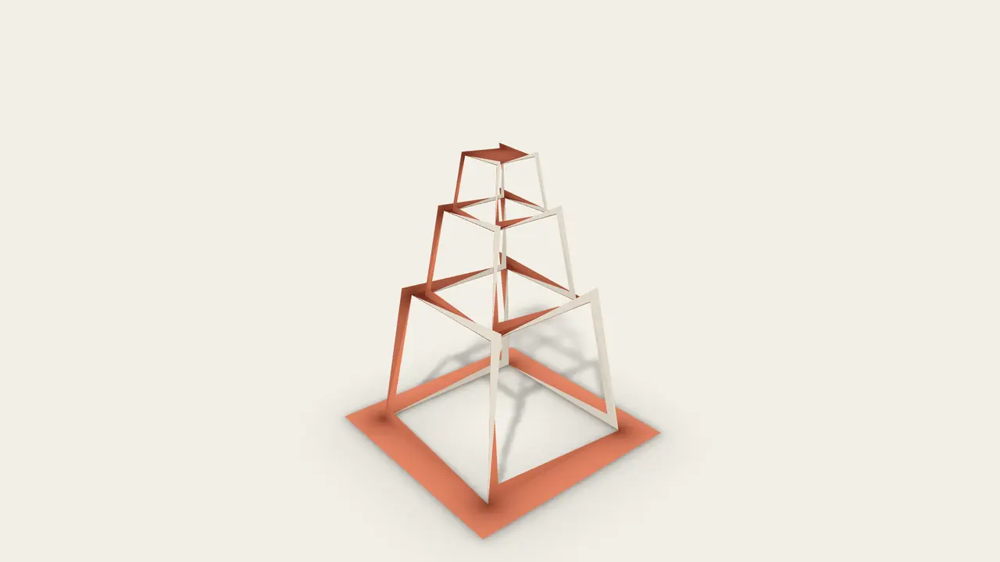
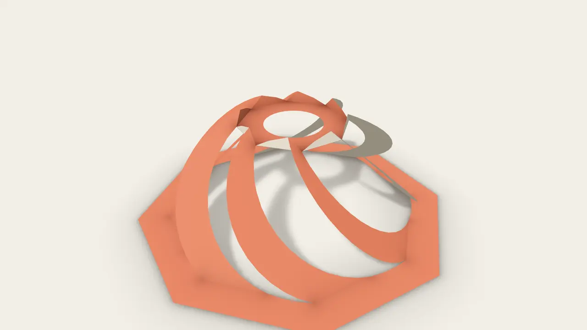
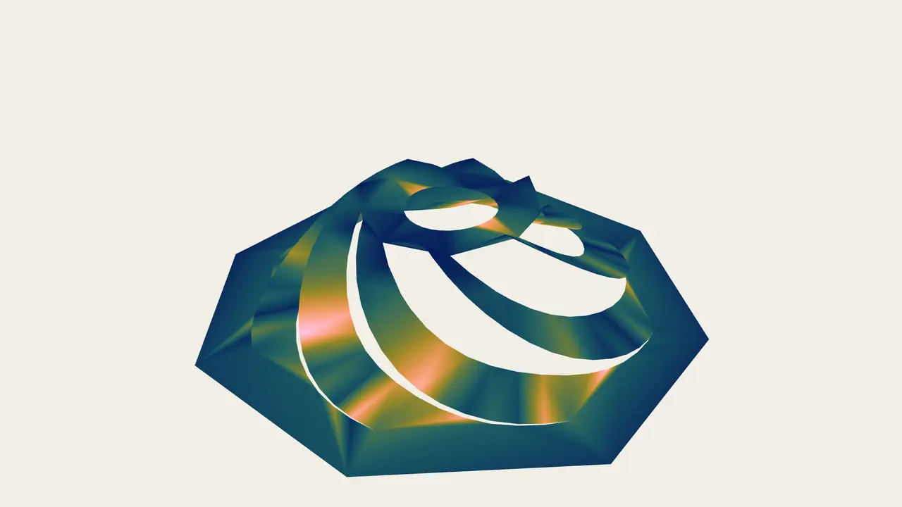
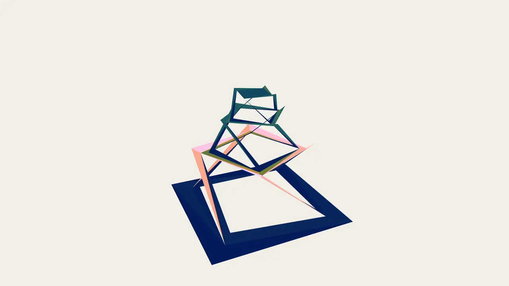
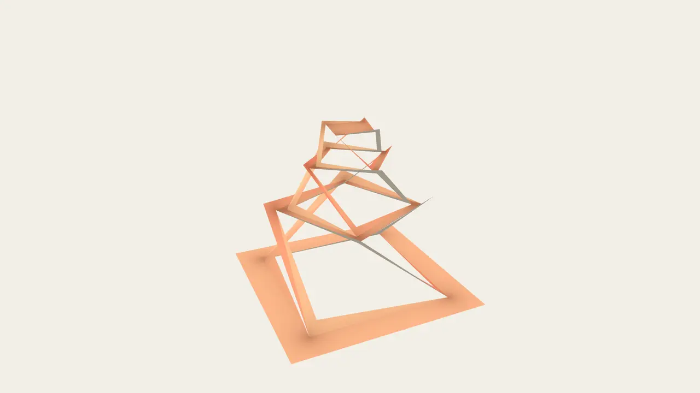
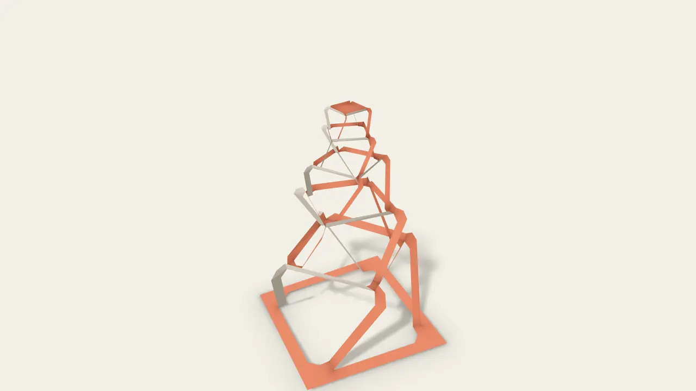
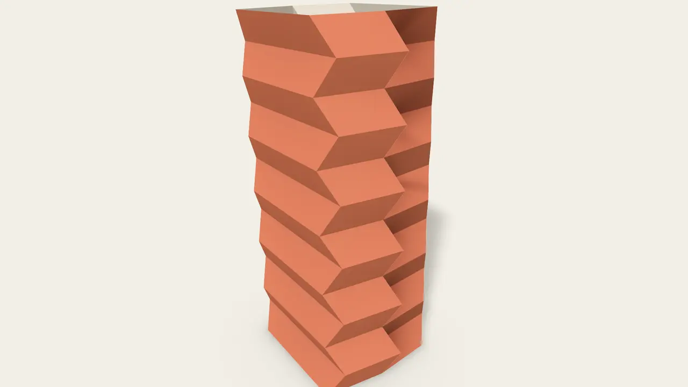
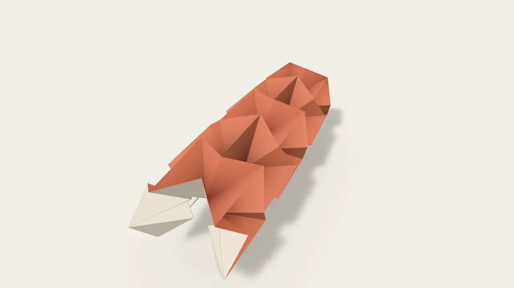
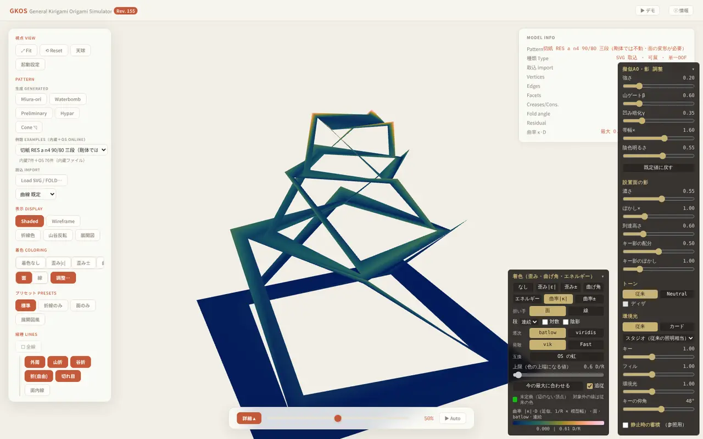
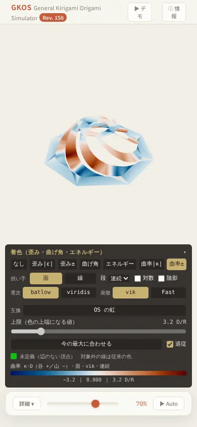

Simulator · 開発の現状Development
General Kirigami Origami Simulator
単一ファイルで動く、剛体折紙・切紙の運動シミュレータ A single-file simulator for the motion of rigid origami and kirigami
GKOS は、折紙と切紙（キリガミ）の折り運動をブラウザ上で追跡する研究・教育用のシミュレータです。舘知宏の剛体折りシミュレーション法（頂点まわりの回転閉合を Newton 法で解く global-Jacobian 法）を単一の HTML ファイルとして再構成し、非可展頂点・切紙のループ閉合・閉管の全経路・弾性へと拡張しました。インストール不要で、スマートフォンでも動きます。
GKOS is a research and teaching simulator that tracks the folding motion of origami and kirigami in the browser. It rebuilds Tomohiro Tachi’s rigid-origami simulation method — the global-Jacobian method, which solves rotational closure around each vertex by Newton iteration — as a single HTML file, and extends it to non-developable vertices, loop closure for kirigami, full paths of closed tubes, and elasticity. No installation is needed, and it runs on smartphones.










解析ヤコビアン（頂点 SO(3)・面ループ SE(3)）、RCM 順序付けとスカイライン Cholesky による疎直接法、3 系統の連続法（通常・閉管・非可展）。数値核は Node のハーネスで検証し、代表 4 模型の折り角をビット単位で記録する回帰基準（golden ρ）で、各版の再現性を保っています。
Analytic Jacobians (vertex SO(3), face-loop SE(3)); a sparse direct solver with RCM ordering and skyline Cholesky; three continuation schemes (standard, closed tube, non-developable). The numerical core is verified in a Node harness, and a bit-exact regression baseline of fold angles for four reference models (golden ρ) keeps every revision reproducible.
動作環境：Chrome / Edge / Safari / Firefox の最新版。単一の HTML ファイル（約 1.4 MB）、外部依存なし、オフラインで動作。
Runs in current Chrome, Edge, Safari and Firefox. A single HTML file (about 1.4 MB) with no external dependencies; works offline.
現在 Rev.156。公開に向けて準備中です。
Currently at Rev.156, in preparation for public release.
開発：宮本好信Developed by Yoshinobu Miyamoto